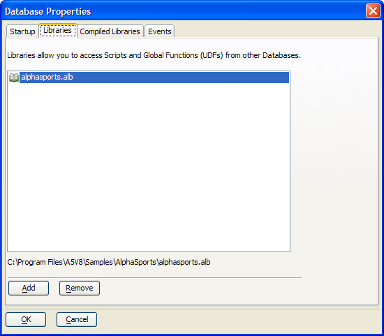

Attaching a Library to the Current Workspace
To attach an external library to the current workspace:
Activate the Control Panel.
Select File > Workspace Properties?.
Select the Libraries tab. Alpha Anywhere shows you the list of attached Libraries.
To add a new Library, click the Add button and select the .alb file that you want to attach. To remove a Library, select the Library and click the Remove button.

See Also